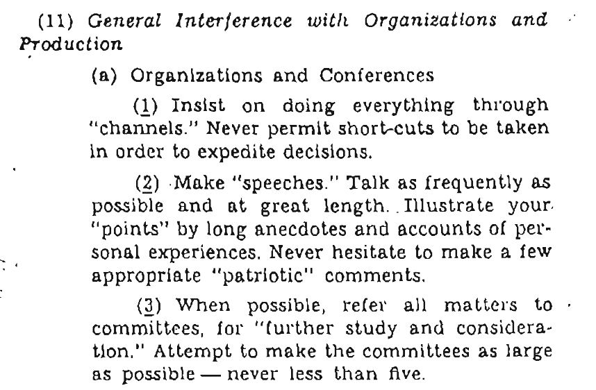
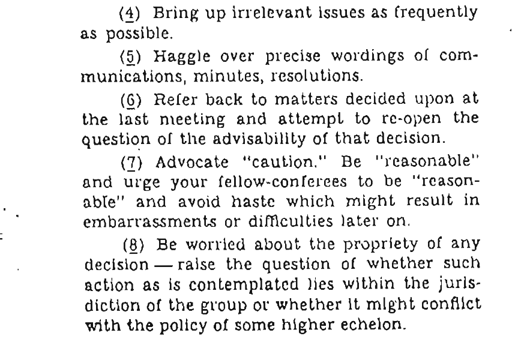

Joep Schuurkes
@j19sch
Mendix
making meetings work
my slides are available at
j19sch.github.io/my-talks/
notes
source Weinberg quote
more stories is better
we struggle with meetings
I wish we didn't
If you feel you do all your work
outside of meetings,
you're meeting wrong.
- me on twitter
how bad is it really?

